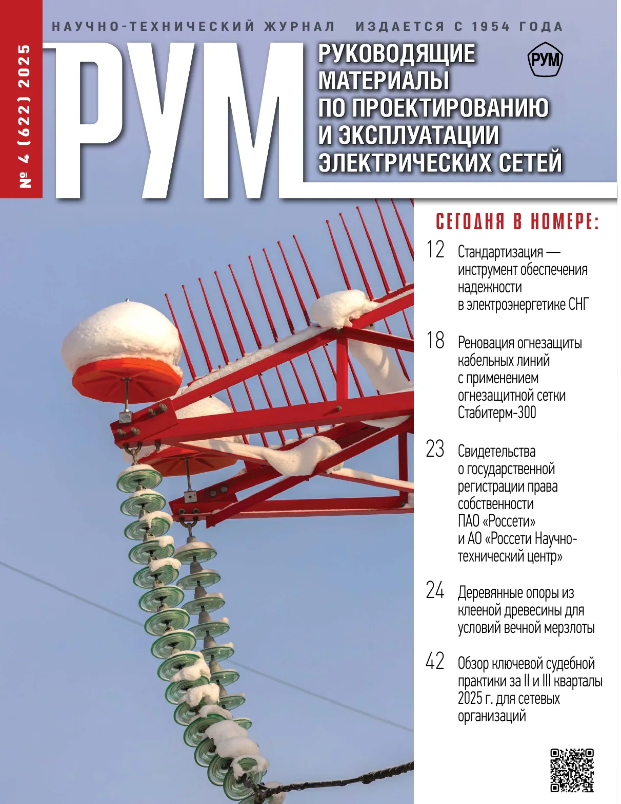
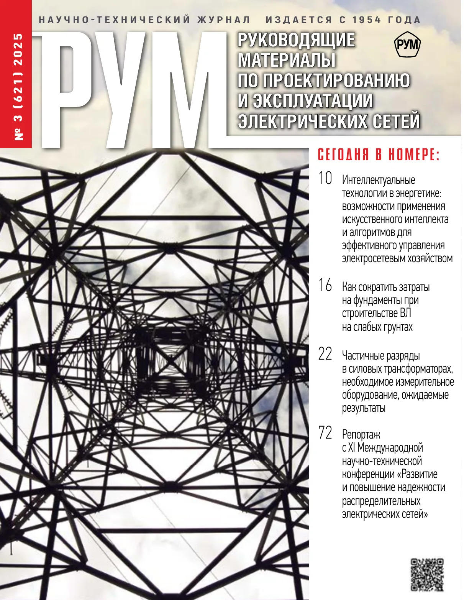
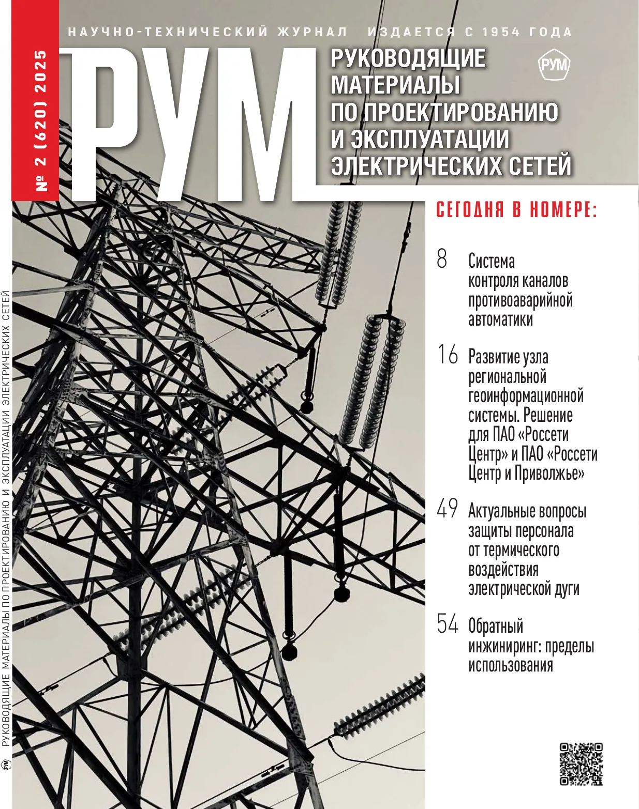
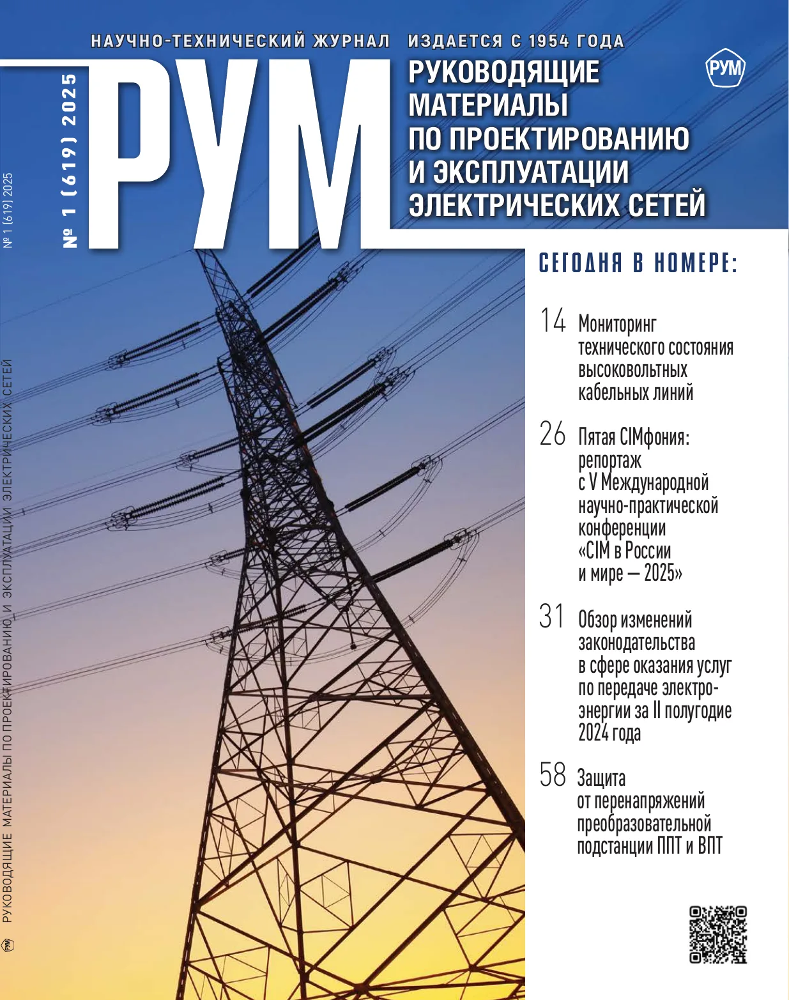

«Россети» и НИУ «МЭИ» обсудили совместную работу в инновационной сфере
На круглом столе обсудили совместные проекты в области ИИ, роботизации, VR и решений для повышения наблюдаемости и управляемости сетевого комплекса.

Новый выпуск, архив с 2018 года, новости, материалы для авторов и подписка — в единой цифровой системе. Полные версии выпусков 2026 года доступны подписчикам, архив 2018–2025 открыт для скачивания.
На круглом столе обсудили совместные проекты в области ИИ, роботизации, VR и решений для повышения наблюдаемости и управляемости сетевого комплекса.
СТО 34.01-30.1-007-2025 разработан и введен в действие приказом ПАО «Россети». Документ устанавливает технические требования и порядок обеспечения дерматологическими средствами индивидуальной защиты.
ГОСТ Р 71886-2024 вводит общие требования к беспилотным авиационным системам для геодезических работ и строительных изысканий.
Стартовал прием исходных данных по развитию энергетической инфраструктуры для подготовки новой программы развития электроэнергетических систем.
На Международной научно-технической конференции «CIM в России и мире» специалисты Группы «Россети» представили подходы к унификации информационного обмена и автоматизации оперативно-технологического управления.

Стандартизация как инструмент обеспечения надежности в электроэнергетике СНГ

Искусственный интеллект в энергетике и обзор ключевых изменений законодательства за первое полугодие 2025 года

Инженерные решения, обратный инжиниринг, судебная практика и развитие геоинформационных систем в электроэнергетике

Молодежные инициативы, цифровые форматы взаимодействия и правовой обзор изменений за второе полугодие 2024 года
Полные версии публикаций 2026 года доступны только подписчикам журнала.
История, тематика, задачи журнала и контакты редакции собраны на отдельной странице.
Требования к статье, изображениям, библиографии и контактам редакции собраны в одном разделе.